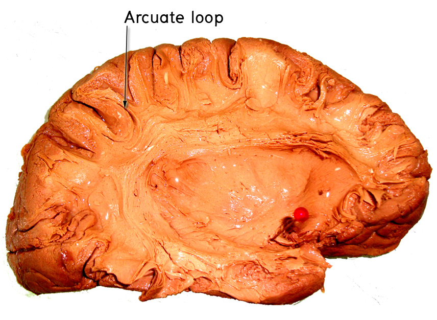
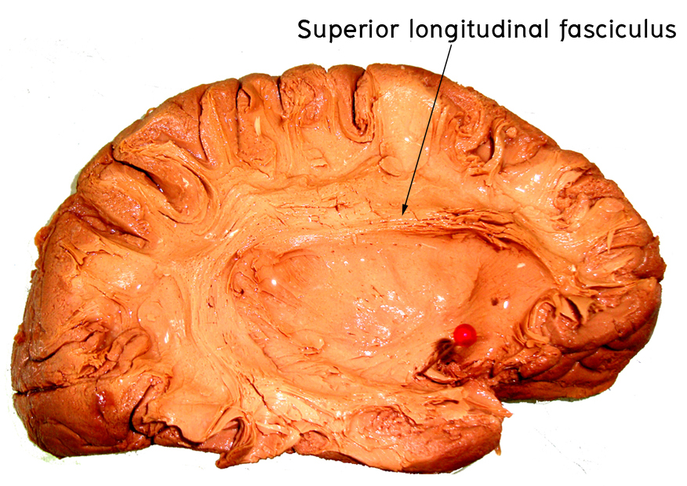
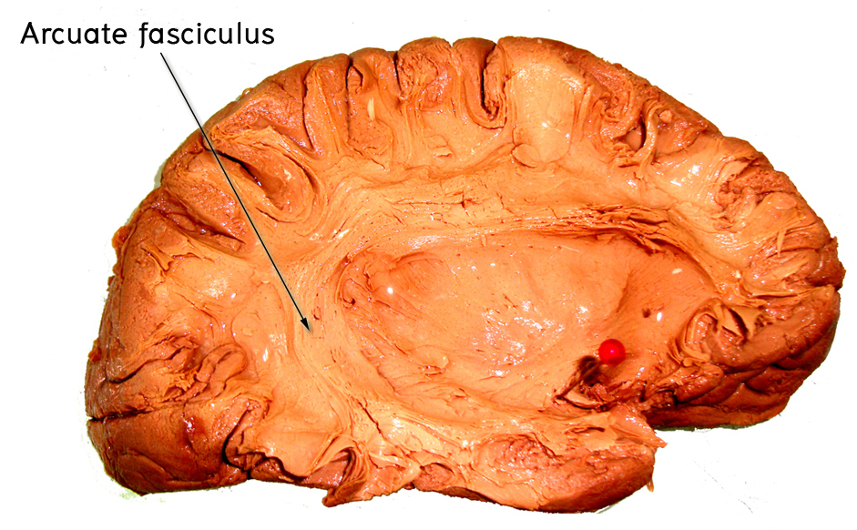

Association fibers
Short association fiber : Arcuate loop

นำ dissected cerebral hemisphere และ plastination of dissected cerebral hemisphere มาชี้แสดง long association ต่อไปนี้



นำ midsagittal section of brain มาชี้แสดงสิ่งต่อไปนี้ ประกอบ Haines’ atlas of neuroanatomy

นำ horizontal section of cerebrum ที่ตัดผ่าน genu and splenium of corpus callosum มาชี้แสดงสิ่งต่อไปนี้ ประกอบ Haines’ atlas of neuroanatomy

นำ coronal section of cerebrum ที่ตัดผ่าน anterior commissure มาชี้แสดงสิ่งต่อไปนี้ ประกอบ Haines’ atlas of neuroanatomy

นำ horizontal section of cerebrum ที่ตัดผ่าน genu and splenium of corpus callosum มาชี้แสดง internal capsule (anterior limb, genu and posterior limb)

ศึกษา horizontal sections of internal capsule แล้วบอกความแตกต่างจากจากการเปรียบเทียบ superior กับ inferior level